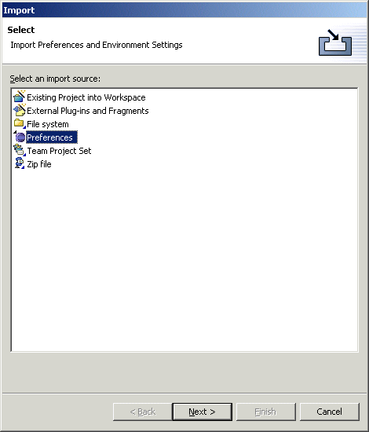
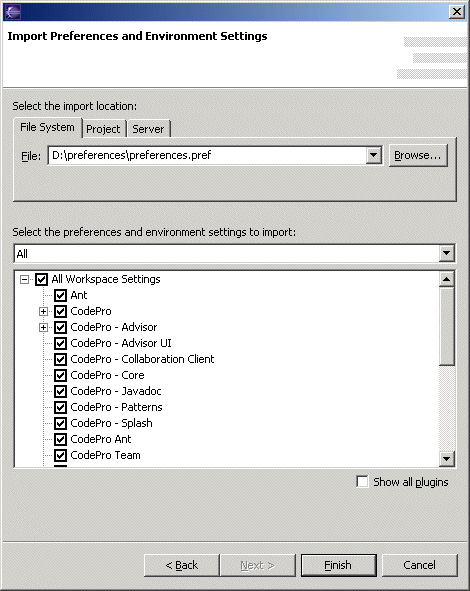
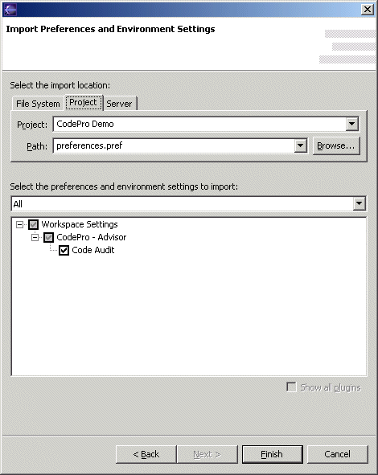

Import Preferences Migrating from one IDE version to another is inconvenient due to the difficulty in moving general workspace preferences from one version to another. Likewise, configuring multiple user's workspaces with common settings (such as code formatting preference, classpath variable settings, etc.) is also very difficult. CodePro makes it easy for users to copy workspace preferences in any granularity between multiple workspaces. It also makes it easy for team leaders and administrators to set up common sets of preferences for configuring multiple workspaces. Key advantages relative to the simple preference import/export mechanism in base Eclipse are:
Importing preferencesTo import preferences, open the Import Wizard, select "Preferences" and click "Next". At the top of the wizard page, is an area for selecting the location from which the preference file should be imported. The first option, "File System" allows the user to import the preferences from any arbitrary location in the file system. It defaults to \preferences\preferences.pref (the ".pref" suffix is used for all preference files). The wizard automatically remembers the names of the last eight files that have been imported. The second option, "Project", allows the user to load preferences from a project loaded in their workspace. The wizard automatically remembers the last project imported to as well as the last eight files that have been imported. The third option, "Server", can be used only if a collaboration server has been specified in the preferences. This option allows the user to load preferences from the collaboration server. The wizard automatically remembers the last path used. The fourth option, "URL", can be used to load preferences from a preference file stored at a web location accessible via a standard URL.  Once a preference file has been selected, the checkbox tree shows a list of all preferences recorded within the file. Each plugin that defines any preferences recorded to the file is listed and may be individually selected. Some plugins define multiple categories of preferences (e.g., the "Java Core" plugin defines both "Classpath Variables" and "Code Formatting" preferences) which also may be individually selected. Immediately above the checkbox tree is a dropdown list providing quick access to common sets of preferences such as "Java Classpath Variables" or "Java Code Formatting". Only preferences recorded to the file are listed. Selecting one of those items will cause the appropriate checkboxes to be checked.  |